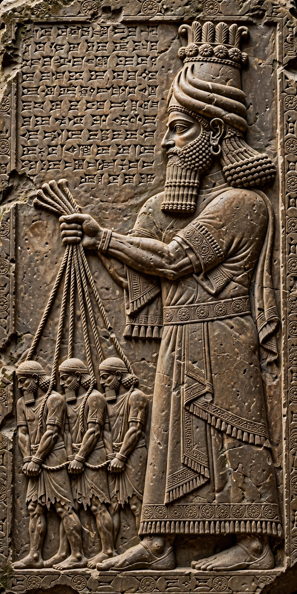

| Esarhaddon | |
|---|---|
| Reign | 681–669 BC |
| Predecessor | Sennacherib |
| Successor | Ashurbanipal (Assyria); Shamash-shum-ukin (Babylon) |
| Father | Sennacherib |
| Mother | Naqi'a (Zakutu) |
| Died | 669 BC, Harran |

Esarhaddon (Akkadian: Aššur-aḫa-iddina, "Ashur has given me a brother") was the king of the Neo-Assyrian Empire from 681 BC until his death in 669 BC. The third king of the Sargonid dynasty, he was the youngest son of Sennacherib and is best known for rebuilding Babylon, which his father had destroyed, and for conquering Egypt in 671 BC.
Esarhaddon was not the eldest son, but with the support of his mother Naqi'a he was designated crown prince, provoking the jealousy of his elder brothers. When Sennacherib was assassinated in 681 BC — according to later tradition by his own sons — Esarhaddon defeated his brothers in a six-week civil war and took the throne. The parricides fled north, possibly to the kingdom of Urartu.
Esarhaddon reversed his father's policy toward Babylon, rebuilding the city and its great temple Esagila, and restoring the statue of Marduk. He campaigned repeatedly in the Levant and against the Cimmerians and Medes in the north and east. In 671 BC he invaded Egypt, defeated Pharaoh Taharqa of the Kushite Twenty-fifth Dynasty, and captured Memphis, making Assyria master of the largest empire the Near East had yet seen. His victory stele from Sam'al (Zincirli) depicts him holding Egyptian and Levantine captives on ropes.
Plagued by illness and paranoia — he conducted repeated extispicy rituals and appointed substitute kings — Esarhaddon arranged an unusual double succession in 672 BC: his son Ashurbanipal would rule Assyria and another son, Shamash-shum-ukin, would rule Babylon, bound by the succession treaties known as "Esarhaddon's Treaty". In 669 BC, marching to Egypt to suppress a revolt, Esarhaddon died suddenly at Harran.